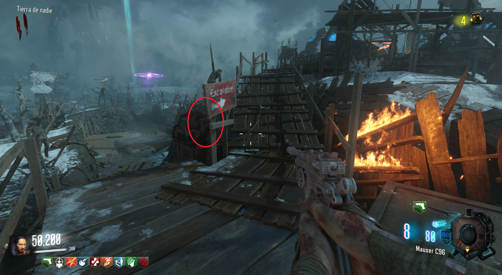
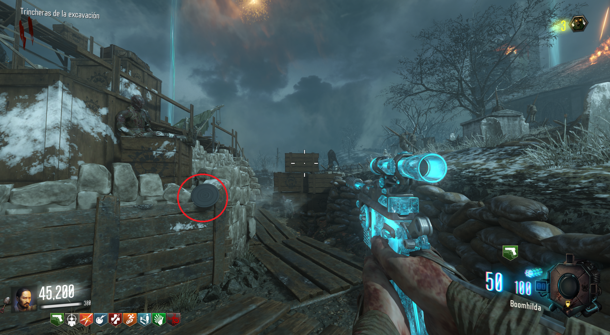
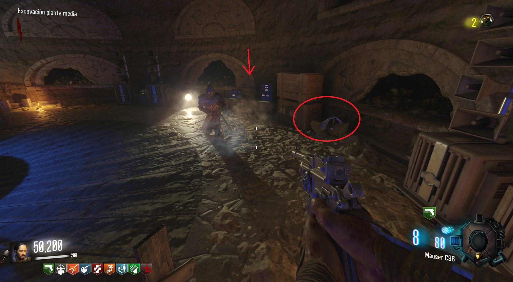
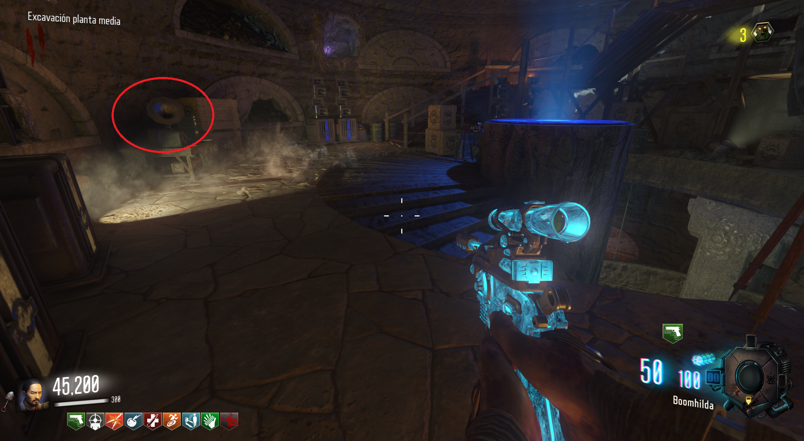

Para bajar a la excavación, tendremos que buscar un disco y el gramófono. Localizaciones del disco:

Subiendo a la Excavación desde el Búnker.

En el camino que va de Excavación a la Iglesia.
Para encontrar el gramófono bajaremos por la Excavación y lo encontraremos en el suelo.

Pondremos el gramófono en la mesa y podremos bajar al lugar.
